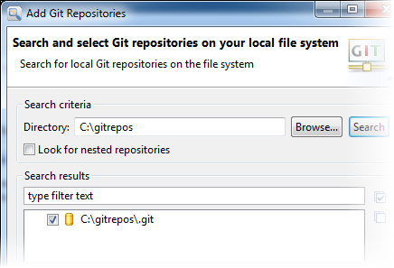

If you've already been working with Git using the command line or some other client,
you can easily add your repositories to GitEye.
-
In GitEye's
Dashboard, click Add
Repository.
-
In the Add Git Repositories dialog, specify the directory
where your Git repositories are located.
The default location is the /git folder in your home
directory, but you can search for or browse and select a different directory on
your hard drive.

-
If you have an elaborate folder structure for your Git repositories, select the
Look for nested repositories option.
-
Select the repositories you want to add, and click
Finish.
The repositories are added to the Git Repositories view
where you can start working with them.